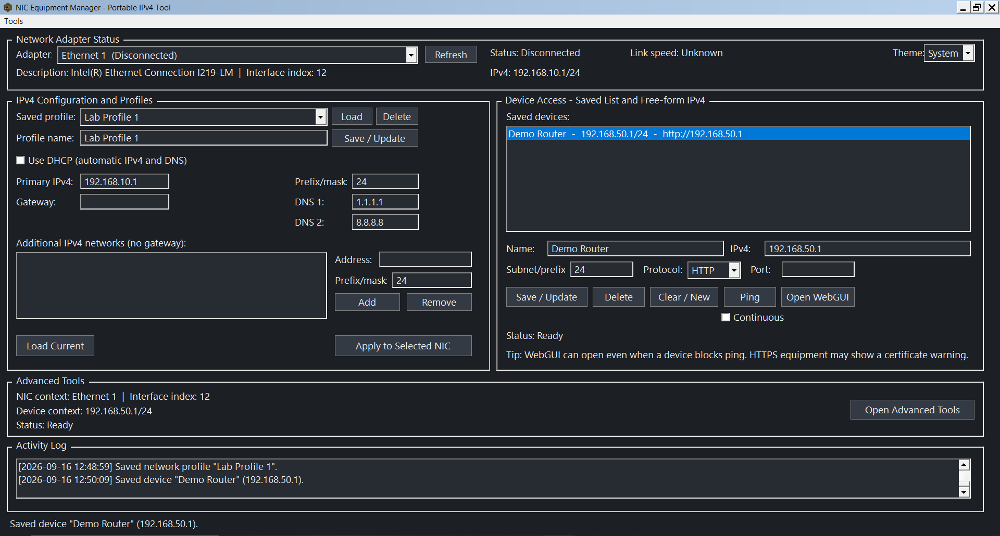
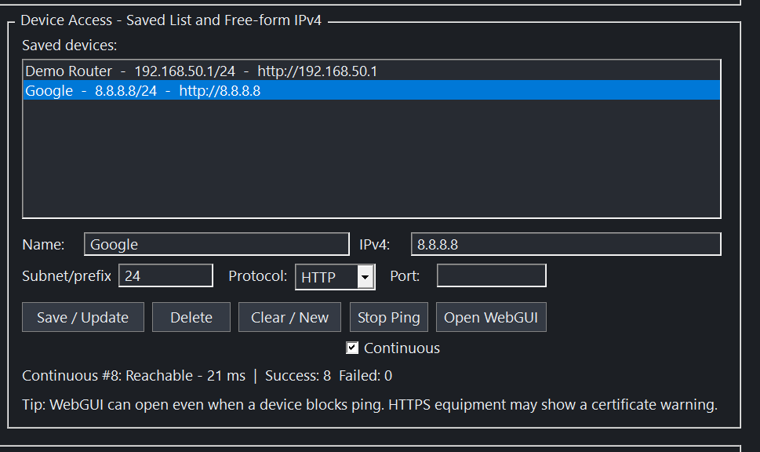
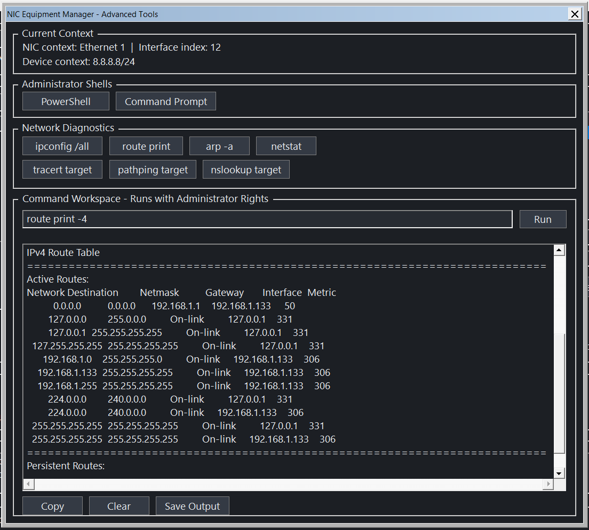
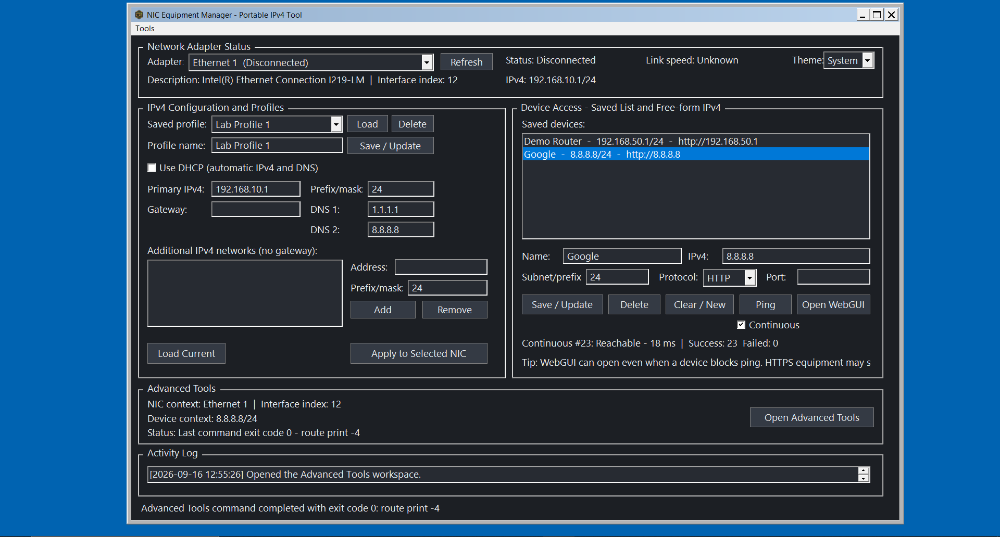
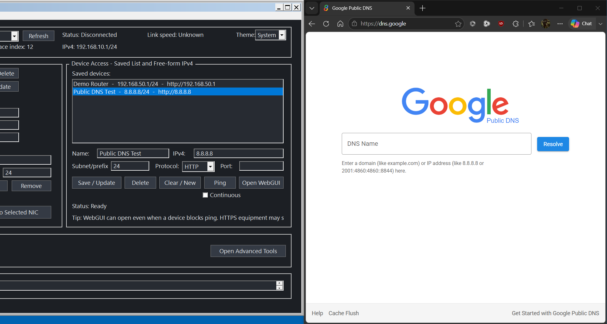

NIC Equipment Manager
A native Windows utility built to turn repeated IPv4 configuration and network diagnostics into a focused, verifiable workflow.
The problem
A multi-NIC laptop regularly needed different IPv4 configurations. Windows could already perform all of the work, and experienced users can often navigate it quickly from memory. The problem was that the workflow was fragmented, repetitive, and dependent on knowing where every setting, command, and shortcut lived.
The solution
NIC Equipment Manager consolidates reusable profiles, saved targets, IPv4 configuration, ping testing, browser access, activity logging, and deeper diagnostics in one application.
Why this tool exists
Experienced technicians often perform these tasks from memory using Windows settings, PowerShell, netsh, and keyboard shortcuts. NIC Equipment Manager does not replace that knowledge—it brings the most common steps into one clear workflow, making repetitive work faster for experienced users and more approachable for people still learning the tooling.
For me, the goal was simple: keep the native Windows capabilities available while reducing the friction of jumping between utilities, remembering command syntax, and repeating the same navigation every time.
Core configuration workflow
Profiles capture static addressing, DNS, and related values so a selected interface can be staged quickly. The implementation also supports disconnected NICs—important when equipment is not yet physically connected.

Device access and monitoring
Saved targets provide a quick path to common equipment addresses, one-time or continuous ping, success/failure tracking, and direct browser launch for HTTP/HTTPS management interfaces.

Advanced diagnostics
The companion workspace adds elevated shells, diagnostic presets, target-aware tools, and a free-form command runner with captured output. Long route/trace output remains readable while scrolling.

Responsive Windows UI
The UI was refined against real DPI and resize behavior, including maximized layouts, aligned control columns, custom dark-theme section headers, and usable status/log areas.

Feature proof: saved web targets
Saved device entries can open the configured web interface directly. Portfolio material uses generic public/home-lab targets rather than any work-specific data.

Engineering challenge: Windows state verification
Real hardware testing revealed that Windows could return a successful command result while a disconnected NIC still retained persistent DHCP state. The final implementation updates both live and persistent state and reads Windows back before reporting success.
The rule became: verify the requested state, not just the command exit code.
Engineering challenge: real UI behavior
Testing also exposed DPI clipping, dark-theme group-box rendering, invalid link-speed sentinel values, moving-column alignment issues, and stale repaint artifacts in long scrolling command output. These were corrected through iterative hardware/UI testing rather than cosmetic mockups.
Development approach
- Identify a repetitive or failure-prone step.
- Define the expected Windows state.
- Implement the behavior.
- Test against real adapters.
- Compare results with native Windows tools.
- Correct discrepancies and add regression coverage.
AI-assisted development accelerated implementation, debugging, and documentation; requirements, acceptance, testing, and final behavioral verification were driven by hands-on use.
Result
Identify a repetitive technical process, understand how it is actually performed, build a focused tool around it, and verify that the automation produces the intended system state.
Skills demonstrated: Windows desktop development, networking fundamentals, IPv4 configuration, PowerShell and netsh integration, persistent state/registry handling, Win32 UI design, DPI/responsive layout, local persistence, diagnostics, debugging, regression testing, packaging, and workflow automation.